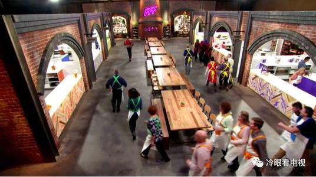

|
现在我们来看看让我入坑的节目吧！ |
 |
 |
Mater Chef 厨艺大师 |
||
一个很好的下饭节目！到现在一共有十季，本人全都看完了（-.-）。Mater Chef是美国FOX推出的全美最大的厨师选秀活动，Gordon Ramsay和其他美食界大牛担当评委，参赛者都是homecooks，来自各行各业不同背景，相同的是他们都对烹饪充满热爱（但是也有来划水的大可爱）。经过一次次厨艺比拼和淘汰，最后的冠军将获得master chef trophy、25万美金，个别赛季的冠军甚至还可以出版自己的菜谱，走上人生巅峰。 每一轮比赛都有固定的流程：mystery box challenge; team challenge; eliminination。Mystery box challenge（盲盒挑战）环节，各位homecook展示自己的创造力，评委规定好做什么菜或者用什么食材，各位参赛者去储藏室自取所需的配料，在规定时间内内做完一道菜，评委品尝，这一环节你可以欣赏到很多美丽的摆盘，赏心悦目。之后的team challenge（团队挑战赛）很有意思，选手分成两队做大锅饭，很多期是野外做饭，可以欣赏到美景。这个环节也有drama看点供你娱乐消遣，同时可以了解到不少西方饮食文化，比如西部牛仔的饮食习惯、美国军人吃什么、孩子们爱吃什么，对于不同的人群，食物的生熟程度、口味咸淡、辣不辣都是有讲究的。总决赛时两位或者三位选手各自在有限时间内准备appetizer, entrée, dissert（开胃菜、主菜、餐后甜点）各一道，评委品尝后决定赢家是谁。 |
||
|  | ||
建议观看的时候前期海选阶段可以跳过一些，盲盒挑战环节到后期大神pk的时候比较刺激，团队挑战赛则是人越多越热闹、也越有意思。 对学英语感兴趣的同学可以学到很多食物相关的词汇，比如菜名、食材名、烹饪方法等；吃货们则可以看选手们做饭，从而对西餐文化有非常直观的感受，不想当厨子的食客不是优秀的吃货！这个节目有顶尖的西餐导师，Gordon Ramsay和其他评委绝对够格，你的美食知识会噌噌地涨起来。 无奖问答：你知道Fillet-Mignon、T-bone、sirloin、rib-eye、short rib都是什么牛肉吗？这些分别怎么做才最好吃？（真正的吃货选哪个？） 你知道这些鸡蛋都是什么样的吗：omelette, poached egg（水里的荷包蛋）, boiled egg（带皮煮的水煮蛋）, scrambled egg, egg Benedict（不得不说吃个鸡蛋还挺讲究的） 看这个节目，你会知道西餐特别看重食材，不同的食材的处理标准是完全不同的，比如牛肉可以不全熟，但是鸡肉、猪肉一定是要全熟的；一个完美的煎蛋（西方标准），蛋清必须全熟，不可有透明的，蛋黄要有溏心，同时蛋清不能太干（anyway 本人标准：蛋清蛋黄都必须是固体！哪个都不能流动）；一个成功的soufflé（舒芙蕾，蛋奶酥）顶部不能塌陷，中间要有半生不熟的那种流心，调味要好，非常考验厨师的能力。所以下次再吃的时候，你就能知道厨师的水平了。 希望我们的智能手机早日实现气味的传输，这样就可以知道节目里的东西到底好不好吃了，毕竟西餐很多时候中看不中吃。看这个节目的一大好处就是会对许多菜品产生好奇心，不至于对西餐厅完全无感（指的是fancy一点的那种），有了美食，生活充满希望。而且万一哪天被某餐厅坑了，去吵架的时候也有底气！ 最后说一句，世界各地美食文化都博大精深，但是我国的火锅真的香！！西餐可以把鸡蛋做出各种花样，不过我还是钟爱自己做的煎蛋(。>.<。)。 |
||
Home Page |
Master Chef |
Hell's Kitchen |
Ramsay's Great Escape |